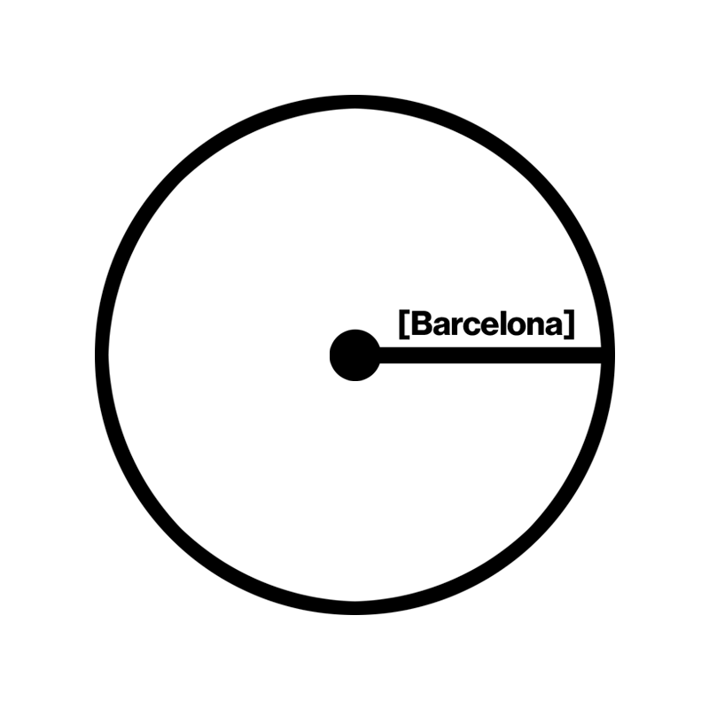

Capítulo 02: Nosotros.
escrito por: uri o'callaghan /inspiredby magazine of arts and culture editor /08 min read
Este artículo forma parte de la serie de artículos llamada ORÍGENES. El primero fue una reflexión sobre el origen de la vida. En esta segunda entrega nos centraremos en el origen del ser humano.
No siempre hemos estado solos: En el pasado había más de una especie humana poblando la Tierra. Los que quedaron acabaron conquistando la Luna. Esto es una breve reflexión sobre nuestros orígenes.
Carl Sagan ideó el llamado Calendario Cósmico, es decir, una simplificación de la historia del Universo en el ciclo de un calendario anual, siendo el 31 de diciembre a las 24h, hoy en día.1 Así, el Big Bang habría detonado en el primer momento de la celebración de año nuevo. El Sol y nuestro Sistema Solar no habrían nacido hasta el 31 de agosto. No sería hasta el 21 de setiembre que la vida en la Tierra habría aparecido. Todos los mamíferos celebrarían su nacimiento el 26 de diciembre. Dos días antes de acabar el año, día 30 de diciembre, un meteorito de 12km de diámetro impactaría sobre la Tierra y extinguiría a los dinosaurios. El radio del meteorito fue semejante a lo que es hoy Barcelona.

El último día del año, el mundo madrugaría con la separación del ser humano y el chimpancé. Este hecho configuraría el destino de todo lo que estaba por pasar.
"Hace 6 millones de años, una única hembra de simio tuvo dos hijas. Una se convirtió en el ancestro de todos los chimpancés, la otra es nuestra abuela"-Y.N.Harari 2
De hecho, se cree que todos los seres humanos actuales del planeta Tierra compartimos genes de una misma hembra, llamada Eva Mitocondrial, que vivió en algún lugar de África hace 200.000 años. Todos los linajes convergen en uno de solo, el de nuestro ancestro común femenino.3, 4 En el siglo pasado se diseñaron hornos para asesinar grupos humanos enteros aduciendo que su genética estaba contaminada. En realidad sus verdugos compartían las mismas (pocas) diferencias.
La separación entre humanos y chimpancés no fue un proceso dual. La rama de los chimpancés se fue dividiendo en muchas otras especies... y la de los humanos también. A pesar de pequeñas diferencias físicas entre comunidades, los seres humanos actuales formamos parte de la misma especie, Homo Sapiens. Esto no ha sido siempre así. La Tierra tuvo una vez diferentes especies de humanos viviendo en su superficie. Cuesta creerlo, ya que nos hemos acostumbrado a ser los únicos. Al menos desde hace unos 10.000 años lo hemos sido, pero en el pasado, el mundo estaba poblado por diferentes especies contemporáneas. Hace 30.000 años, había al menos cuatro especies diferentes de humanos en distintos sitios del planeta.2, 5 Aparte de Homo Sapiens, Neandertales poblaban Europa, Denisovanos campaban por Asia y Homo Floresiensis recorrían la Isla de Flores5
Ni siquiera nosotros, Homo Sapiens, hemos sido una especie humana muy antigua. Tan solo hemos vivido en la faz de la Tierra durante los últimos 200.000 años aproximadamente. Esto equivale solamente a unos 7 minutos y medio del calendario cósmico. En comparación, Homo Erectus, considerada la especie humana más longeva, estuvo campando por las tierras de nuestro planeta durante casi 2 millones de años. Es muy improbable que nosotros, Homo Sapiens, logremos mantenernos con vida durante tanto tiempo. Es incluso bastante arriesgado afirmar que dentro de 10.000 años no estaremos extinguidos como especie. Pecaríamos de optimismo al pensar que, 75 años después de que el mundo casi se aniquilara en un intercambio de bombas nucleares, nuestra especie fuera a durar mucho más.
De hecho, tan solo en los últimos 300.000 años un total (o más) de 9 especies de humanos diferentes han poblado la Tierra.6 Así de increíble como suena. Algunas han sido contemporáneas a las otras, pero hoy en día sólo queda una, la nuestra. Esto es un hecho increíblemente difícil de pensar, porque no podemos imaginar cómo sería una sociedad en la que conviven diferentes especies humanas. ¿cómo sería el mundo de hoy si los Neandertales hubieran sobrevivido?
Entre las existentes brechas de poder Norte-Sur, Hombres-Mujeres, Blancos-Negros, ¿Habría que añadir la brecha entre diferentes especies? Los Neandertales eran los pobladores de Europa mucho antes de que esta fuera ocupada por Sapiens. Ellos fueron los primeros europeos y nosotros fuimos inmigrantes africanos. ¿Cómo se habría desarrollado la actual Unión Europea con la existencia de dos razas europeas? Si el Brexit se forjó esencialmente por el rechazo a la inmigración y la acogida de refugiados,7 ¿Homo Sapiens habría estado también en ese grupo?
"[Brexit] La preocupación general para estos "Leavers" era la inmigración, a través de la cual todos los temas relevantes de la campaña (fronteras, soberanía, servicios sociales, cultura británica y seguridad) podrían filtrarse fácilmente"-Amanda Garrett7
Todo esto no dejan de ser especulaciones, pues hoy en día no existe absolutamente ningún grupo humano de la especie Neandertal. Y esto da para (quizá) una terrible historia. El hecho es que no hay consenso científico sobre la desaparición de la especie Neandertal. Sin embargo, el comienzo de su extinción se fecha en el mismo momento que Homo Sapiens empieza a desplazarse hacia su territorio. La relación "Extinción-Contacto con Homo Sapiens" es evidente, aunque no están claros sus motivos. Algunos científicos han teorizado que su desaparición fue a causa de nuestro primer genocidio en masa.8 Si bien es cierto que esta teoría no es la más probable, indica un patrón que ha seguido a nuestra especie hasta hoy en día: Cada vez que Homo Sapiens se establece en un nuevo lugar, desaparece gran parte de sus animales.
Poco después de que seres humanos se desplazaran a América desde el norte de Asia, desapareció la mayor parte de la megafauna americana. El mismo resultado tuvo el poblamiento de Australia para su megafauna.2, 9 Aunque el factor climático jugó un papel importante en su desaparición, la repentina invasión Sapiens en entornos donde los animales no habían evolucionado para temer y sobrevivir a los humanos, hizo que pudieran ser cazados con facilidad. 2, 10
La acción del ser humano hacia el medio natural es tal, que algunos científicos han propuesto definir nuestra época geológica actual como el Antropoceno, en sustitución de la consensuada hasta la fecha, el Holoceno. 9 Este cambio es importante: el Antropoceno determina que el ser humano es la primera fuerza de transformación, destrucción y cambio en el planeta, muy por encima de cualquier otra fuerza natural combinada.
"El impacto humano en la Tierra es tan profundo que el Holoceno debe dar paso a una época definida por las pruebas nucleares, la contaminación del plástico y el pollo domesticado." -Carrington, D. (The Guardian). 11
Toda esta breve explicación sobre el impacto de Homo Sapiens en su entorno venía del debate sobre la extinción de los Neandertales. Como se ha dicho anteriormente, es poco probable que el contacto Sapiens-Neandertal hubiese derivado en un cruel genocidio entre especies. La razón de su extinción parece ser mucho más simple: una serie de mutaciones en el cerebro de su rival, Homo Sapiens, producidas por presiones evolutivas o por mutaciones totalmente aleatorias hace unos 70.000 años, dotaron a estos de una mayor capacidad de imaginación, comunicación y pensamiento abstracto. Aunque puedan parecer mejoras superfluas, una mayor capacidad comunicativa permitió, entre otras cosas, una mejor tecnología primitiva, mejores estrategias destinadas a la caza en grupo, habilidades superiores para comerciar, manipular, deliberar en grupo...
Es verdad que puede parecer una explicación bastante menos emocionante que la del genocidio, pero el hecho de que nuestra consolidación como especie humana dominante provenga de nuestra creatividad e imaginación es un hecho verdaderamente mucho más enorgullecedor que un posible genocidio en masa.
Estos cambios genéticos en nuestro cerebro fueron determinantes para nuestra especie. La carrera espacial que nos llevó a la Luna en 1969 empezó realmente hace 70.000 años, en lo que el historiador Yuval Noah Harari considera como una de las tres revoluciones más importantes de nuestra historia, la revolución cognitiva.2
Lo realmente definitorio de estas mejoras cerebrales en nuestra especie se reduce al hecho de que permitieron al ser humano una de las cosas más sencillas que podemos hacer hoy en día:
compartir relatos, creencias e ideas ficticias consensuadas entre los miembros de la sociedad, es decir, la capacidad de imaginar colectivamente.
La imaginación nos hizo humanos. De hecho, no es que los neandertales no tuvieran la capacidad para imaginar o compartir creencias, pero no lo hacían en la medida de sus rivales ni desarrollaron las capacidades cognitivas de Homo Sapiens.2
La capacidad de imaginar colectivamente permitió a los humanos modernos organizarse y cooperar en tribus mayores, sin necesidad de que sus miembros fueran conocidos próximos. Esta es, de hecho, una de las características que nos distinguen del resto de animales: tanto chimpancés, bonobos, caballos, abejas, elefantes... y un sinfín de animales destacan por sus relaciones sociales, pero en general, estas se ven limitadas a los otros miembros de sus mismos pequeños grupos, colmenas o manadas.
En el caso de los humanos modernos, nuestra capacidad imaginativa y nuestras dotes de comunicación nos permiten cooperar en masa. Así, personas que comparten los mismos dogmas, son mucho más propensas a cooperar y establecer tratos de confianza entre ellos. Los mitos que unieron a las primeras tribus se convirtieron en las religiones de los grandes imperios. Los códigos de conducta que imaginaron los individuos de las pequeñas hordas se convirtieron en las constituciones de los estados modernos. El valor imaginario que algunas de las primeras tribus le dieron a las conchas marinas o perlas son el precedente de los trozos de papel que hoy llamamos «billetes».
Absolutamente todas estas cosas solo tiene sentido en nuestra imaginación colectiva. El gran desarrollo de estas capacidades imaginativas que experimentaron las sociedades Sapiens de hace 70.000 años permitió formar grupos más grandes y complejos, con capacidades comunicativas superiores, de forma que en competencia con los neandertales, tuvieron una ventaja superior y acabaron desbancando a sus rivales. Poco a poco, las sociedades Sapiens experimentaron una tasa de crecimiento de población superior a la de las tribus neandertales. Estos últimos, con dificultades para sobrevivir y competir por los recursos escasos en un entorno dominado ya por los recién llegados Sapiens, empezaron el lento y largo camino hacia la extinción.
La imaginación nos hizo humanos, pero hasta hace muy poco, nunca habíamos sido los únicos. Al menos hasta hace unos 10.000 años. Desde entonces, Sapiens ha sido el único entre todas las especies humanas en campar por las tierras de nuestro planeta. También fueron los que pisaron la Luna en 1969. Aun así, Sapiens es el protagonista de una transformación ocurrida hace 12.000 años -los últimos 27 segundos del Calendario Cósmico- que cambió para siempre la manera en la que vivimos los humanos. En el próximo capítulo de esta serie de artículos trataremos la revolución agrícola, el suceso que la científica de la NASA Ann Druyan denomina como "la madre de todas las revoluciones", ya que todas ellas derivan de esta. También hablaremos sobre las ventajas de salida (entre ellas la agricultura) que tuvieron algunas sociedades frente a otras y que les permitieron una superioridad geográfica y tecnológica presentes hasta nuestros días.

En Inspired By Magazine creemos en la libre circulación de ideas y por eso, nuestros artículos están disponibles para su republicación libre, con la única condición de citar a sus autores y notificarles la republicación. Para más información, oriolocallaghan@gmail.com
Compartir artículo en:
Fuentes:
02. NOSOTROS
2. Harari, Y. N. (2019). Sapiens. Random House UK.
3. Rice University. (2010, August 17). 'Mitochondrial Eve': Mother of all humans lived 200,000 years ago. ScienceDaily.
4. Dartnell, L. (2018). Origins. Random House UK.
5. Hogenboom, M. (2015). Why are we the only human species still alive?, BBC
6. Longrich, N. (2019). Were other humans the first victims of the sixth mass extinction?. The Conversation.
7. Garrett, A. (2019). "The Refugee Crisis, Brexit, and the Reframing of Immigration in Britain." EuropeNow.
8. Longrich, N. (2019). "Were other humans the first victims of the sixth mass extinction?", TheConversation.
9. Issberner, L-R & Léna, P. (2018). "Antropoceno: la problemática vital de un debate científico". UNESCO
10. Mediavilla, D. (2015). "La sospechosa coincidencia entre la llegada humana y las extinciones". El País.
11.Carrington, D. (2016). "The Anthropocene epoch: scientists declare dawn of human-influenced age". The Guardian.